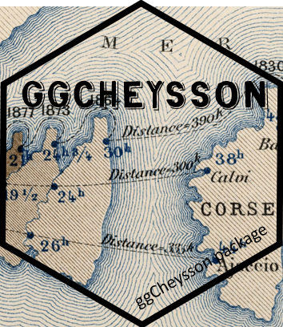

Translate a palette label from another naming scheme to the current name
Source:R/cheysson_name.R
cheysson_name.RdLooks up a palette by whichever label you have it in - the package's own
(possibly outdated) name, RJ Andrews' Advent-calendar label, Tom Shanley's
Observable notebook ID, a David Rumsey catalog number, or an advent day -
and returns the current name to pass to scale_color_cheysson(),
cheysson_pal(), cheysson_pattern(), and friends.
Usage
cheysson_name(
label,
from = c("auto", "name", "andrews", "shanley", "rumsey_no", "old_name"),
advent_day = NULL
)Arguments
- label
Character string to look up.
- from
Which naming scheme
labelis in:"auto"(default): try, in order, the currentname,andrews_label,shanley_id,rumsey_no, and finallyold_name(see Details for whyold_nameis tried last and can be ambiguous)"name": the package's current palette name"andrews": RJ Andrews' label, e.g. "Dec.01-1883.21""shanley": Tom Shanley's Observable ID, e.g. "diverging12514021""rumsey_no": David Rumsey catalog number, e.g. "12514.021""old_name": the name this palette had before the 1.1.0 naming fix - see Details, this can be ambiguous
- advent_day
Optional advent day (1-25) to disambiguate when
labelalone matches more than one palette (only possible forfrom = "old_name"/"auto"), or to assert which palette you mean even whenlabelis already unambiguous. Anadvent_daythat contradicts whatlabelresolves to is an error.
Details
Before ggCheysson 1.1.0, 4 different old_name values were each used by
2-3 genuinely different palettes (a naming collision bug - see
cheysson_labels), so translating from old_name alone can be
ambiguous. When it is, cheysson_name() returns the palette that
actually shipped under that name in 1.0.1 (the one with the highest
advent_day among the candidates - this is what the pre-fix extraction
logic itself picked) and issues a warning() listing every candidate it
did not return. Pass advent_day explicitly to get a different one
without a warning.
Examples
# RJ Andrews' label -> current name
cheysson_name("Dec.01-1883.21")
#> [1] "1883_21"
# Tom Shanley's ID -> current name
cheysson_name("diverging12514021")
#> [1] "1883_21"
# An old (pre-1.1.0) name that's unambiguous
cheysson_name("1883_04", from = "old_name")
#> [1] "1883_31"
# An old name that collided across 2 palettes: returns the one that
# shipped under this name in 1.0.1, with a warning
cheysson_name("1880_07", from = "old_name")
#> Warning: "1880_07" matches 2 palettes (advent_day 6 (now "1880_07"); advent_day 24 (now "1880_21")). Returning advent_day 24 (name "1880_21"), matching what 1.0.1 shipped under this name. Pass advent_day = to get a different one: 6 -> "1880_07"
#> [1] "1880_21"
# Disambiguate explicitly - no warning
cheysson_name("1880_07", from = "old_name", advent_day = 6)
#> [1] "1880_07"